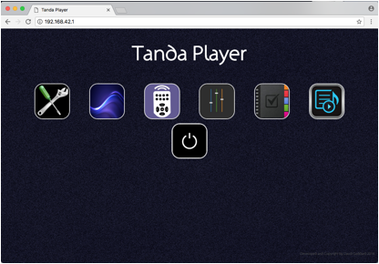
Shortly after the Tanda Player is connected it will open up a Wi-Fi hotspot. Connect your Laptop or your phone or tablet etc. to this network. Open up your network settings and you should be able to find it. (Note that some phones will complain that this is not connected to the Internet – you will need to find a way around this – there is usually a way but it is beyond the scope of this document).
Once connected to the network, open Google’s Chrome browser – the software may or may not work in other browsers but Chrome is the one it is developed to work on.
In the address bar just enter the IP address “192.168.42.1” and press enter. This will open the home page as shown above. Note on Apple Mac and some versions of MS-Windows, you can also enter “tandaplayer3.local” and this will find the Tanda Player too. (Note This may be “tandaplayer.local” on newer hardware models)
The shutdown button is the one shown at the bottom of the above image. Make sure you get into the habbit of clicking this before disconnecting power as it will ensure that the USB drive is dismounted properly and so protect the drive. Failure to do so will possibly corrupt the device and it will need to be repaired or restored.
In most of the application screens the title of “Tanda Player” is shown in the center at the top. Clicking on this will return you to the above screen.
The browser window takes up a lot of screen space on small
laptops and therefore a button is available in the top left of some screens to
make the page take over the entire screen.
It is recommended to work in full screen mode.
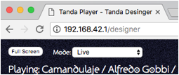
The full screen button is shown top left of the main area in the image above. This makes the browser go full screen and usually it is just the escape key to return to normal. Also, clicking on the application title “Tanda Player” will return the main menu page and restore the screen to normal.
The system sometimes uses simple icons as buttons and clicking on these will perform the necessary actions. In other cases dropdown lists or simply text buttons are used as usual.
Examples of icon buttons are these:
Respectively these are:
1. Play from the very beginning
2. Stop Now
3. Play the last song again from the beginning
4. Play the next song
5. Play from the start of the next Tanda (including cortinas if using them)
The following blue button is a special Stop button for Cortinas. It causes the Cortina to fade out and then the first song of the Tanda plays after whatever period of silence is configured for this playlist. This button allows DJs to leave a full song as a Cortina and still achieve a pleasant fade out – the rate of fading is a system setup property and can be changed before an event.
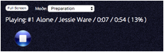
The following icon buttons will open a new playlist or save the current settings against the current playlist.
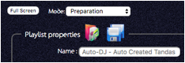
To the right of Tandas in the playlist will be these buttons. The first one allows an entire Tanda to be swapped out after the user has searched for a replacement. The second image shows two images which appear in Live Mode whilst the current Tanda is playing: the top one allows a new song to be searched for and inserted before the next song plays. The bottom button removes the next song. (The insert button can be used for example if the Cortina has got people dancing and the DJ wishes to quickly find and play another of the same style for them before continuing with the Tanda.)
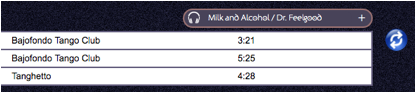
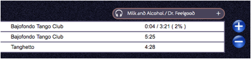
Finally, the headphone symbol is a button which will cause the Tanda Player to stream the song to the browser and so can be played on headphones that are plugged into the laptop or tablet.
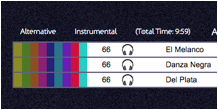
The songs will play from the beginning right through to the end. If you enabled random access in the configuration you will be able click on a waveform representation and hear the song from any part.
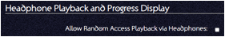
Similarly in the above image clicking on the coloured bars
will bring up the classification window allowing a song’s classification
details to be corrected.
Also the screen sometimes acts like a big button. For example in the Live player application, clicking around a tanda (such as on the “W” in the image below or on the line above the Tanda tracks) will cause that tanda to be played if the user is in preparation mode or manual mode with no music playing.
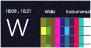
Some aspects of the system use sliders to achieve control such as the volume control.
All sliders act when the user releases the control. Therefore there is no reason to slide a slider! Just click or drag the slider to where you want the value to be and it will act accordingly. Note volumes will still go up and down smoothly. By contrast the positional slider of progress within a song will instantly jump to that position.
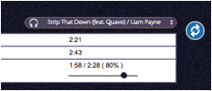
The above image shows a progress slider when in preparation mode within the playlist having played a song by double clicking on the song.
The system is designed around playing Tandas and the Live Player application is where the DJ would spend their time.
However, a DJ may be pushed to put together a Tanda whilst the system is playing a playlist. To help, some of the applications change their sensitivity to being clicked on depending on the mode the system is in.
The modes are:
1. Preparation – this is the most sensitive to clicks and for example clicking on a song will cause it to stop playing whatever it was playing and play this song. Also, for the current song a progress slider is shown which allows the user to jump about within the song. This allows the DJ to perhaps listen to a playlist but just the transitions between the songs rather than listening to the entire song. You can drag/drop tandas to reposition them.
2. Manual Mode – This is a little safer when performing in that songs will always play from the start and if you click on a song or tanda it will only start playing if nothing else is playing.
3. Live Mode – This is the really safe mode if performing live and is the recommended mode. Note that if you click the “Play from the beginning button” then the screen will go full screen and enter Live Mode automatically. In this mode clicking on songs or Tandas will have no effect. However you can still perform searches, swap tandas or use the re-classification pop-up window to fix classifications etc. You cannot use drag/drop on tandas. You can still drag/drop songs within the Tanda to re-order them by dragging the headphone icon!
4. Streaming mode – This mode is similar to Manual Mode and starts a service on the Tanda Player, which will be seen by Apple products such as iTunes as an output device. Therefore any iTunes application running on the Tanda Player network can stream any song the user has through the Tanda Player. This feature is partially supported on the display board.
5. Special Performance – This is not set by the user but instead is set when they choose to play a song from the special performance control panel. Setting this manually is not required.
The following shows iTunes and the selection of the Tanda Player as the output device. This feature is intended mostly to allow visiting DJs or performers to keep their music on their laptops and play through your sound system. (However note that once on your network they will be able to use the application the same as you can and therefore puts your performance at risk of disruption!).
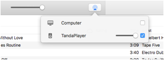